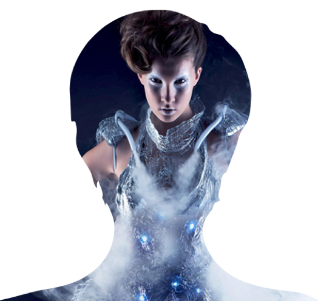

Anouk Wipprecht
Some venue in San Francisco
June 10, 2016 - 6:00pm

Some venue in San Francisco
Hi-Tech Fashion Designer and Innovator Anouk Wipprecht. As she is working in the emerging field of "Fashion-Tech"; a rare combination of fashion design combined with engineering, science and interaction/user experience design. Producing an impressive body of tech-enhanced designs bringing together fashion and technology in an unusual way.
Anouk is currently in the Bay Area running CODAME Labs as Creative Director: a new R&D studio in the middle of San Francisco focussed on interdisciplinary collaboration between artists, engineers, fashion designers, architects, scientists and technologists, pushing the field of art and technology a step further codame labs .